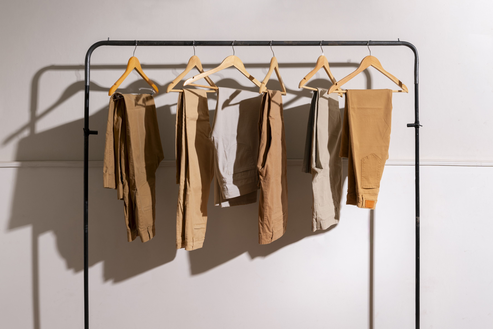

Retorno triufal do minimaliso👔
O estilo que prioriza a qualidade, o caimento impecável e a discrição segue em destaque como
expressão da elegância contemporânea. Ele propõe uma moda consciente, baseada em escolhas
duradouras e bem pensadas, nas quais cada peça assume um papel essencial dentro do
guarda-roupa. A sofisticação se manifesta de forma sutil, revelada nos detalhes, nas
proporções equilibradas e na excelência dos materiais, sem recorrer a excessos ou elementos
chamativos.
Tecidos nobres como linho, lã fria, seda, cashmere e algodão premium ganham protagonismo,
garantindo conforto, caimento perfeito e acabamento refinado. A cartela de cores neutras —
que transita entre bege, off-white, cinza e marinho — reforça a versatilidade e a
atemporalidade das produções, permitindo combinações elegantes e facilmente adaptáveis a
diferentes ocasiões.

A textura do Crochê🧶
Do boho chic ao handmade de luxo, as texturas artesanais ganham destaque e reafirmam seu
espaço na moda contemporânea. Técnicas como o crochê e o tricô vazado surgem como
protagonistas, trazendo um toque de leveza, delicadeza e uma nostalgia sofisticada que
remete ao feito à mão, ao tempo dedicado e ao cuidado com cada detalhe.
Essas peças carregam um charme único, combinando tradição e modernidade de forma natural.
Elas aparecem com força em vestidos longos fluidos, saias de movimento suave e modelagens
que valorizam a silhueta, além de se estenderem aos acessórios, como bolsas e detalhes
aplicados, que elevam produções simples com personalidade e autenticidade. Versáteis e
cheias de identidade, as texturas artesanais criam looks que transitam com facilidade entre
o casual elegante e o sofisticado, trazendo conforto, estilo e uma estética atemporal ao
guarda-roupa.
Use a moda para mostrar ao mundo quem você é💫

O impacto da cor Borgonha
Rica, intensa e cheia de personalidade, essa tonalidade profunda que passeia entre o vermelho-cereja escuro e o vinho se consolida como o novo preto da estação. Versátil e atemporal, ela carrega uma elegância natural que eleva qualquer produção, adicionando sofisticação sem esforço. Com um ar luxuoso e envolvente, a cor aparece com força tanto em peças inteiras — como vestidos, casacos e alfaiataria — quanto em detalhes estratégicos, a exemplo de acessórios, calçados e acabamentos. Fácil de combinar e perfeita para diferentes momentos do dia, essa nuance prova que é possível substituir os tons neutros tradicionais por algo mais ousado, sem perder a classe. Um verdadeiro curinga para quem quer atualizar o visual com modernidade e requinte.